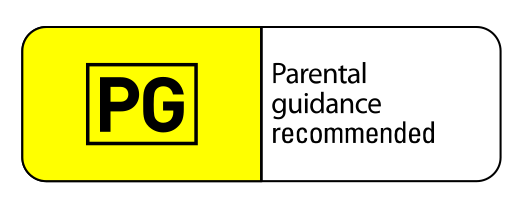

Get your A-game on!
Levelling up your #opensource career!


@KathyReid on GitHub, Twitter, IRC, Slack etc
Motivations
| External | Intrinsic |
|---|---|
| External stimuli - without which you would be less likely to apply effort or skill | Internal drivers which act independently of external forces |
|
|
Flow State
Attribution: Wiki Commons
Learning styles
| Visual | Aural | Reading / writing | Kinesthetic |
|---|---|---|---|
| Learns through imagery, visuals and symbols | Learns through listening and talking | Learns through reading and writing information | Learns by doing, through tactile input |
| Charts, diagrams, visualisations | Podcasts, verbal explanations, lectures, mnemonics | Written information, manuals, email instruction | Examples, demonstrations |
It's a presentation tool
inspired by the idea behind prezi.com
and based on the power of CSS3 transforms and transitions in modern browsers.
visualize your big thoughts
and tiny ideas
by positioning, rotating and scaling them on an infinite canvas
the only limit is your imagination
want to know more?
use the source, Luke!
one more thing...
have you noticed it's in 3D*?
* beat that, prezi ;)